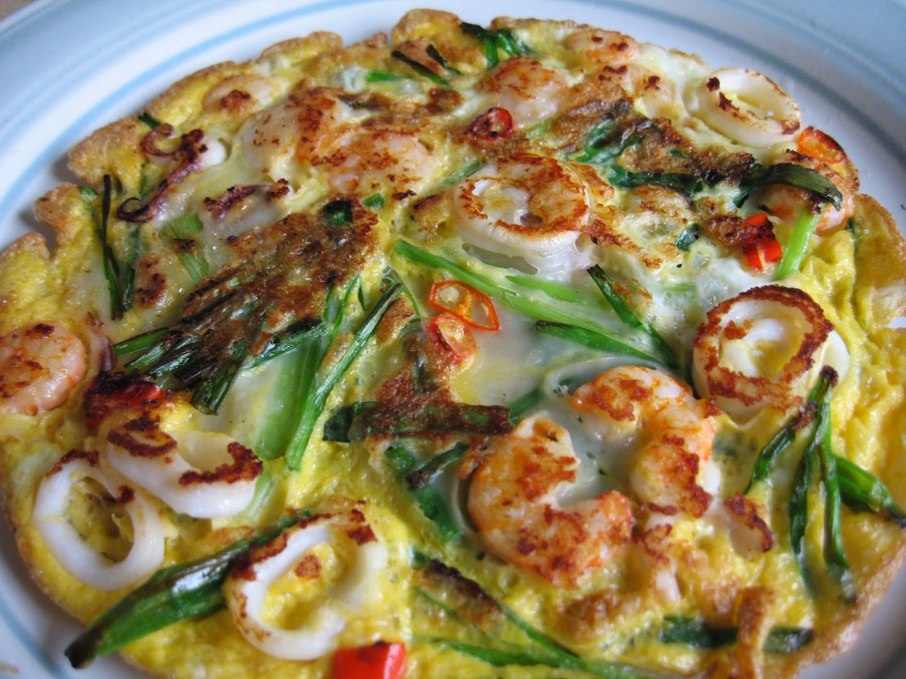

Haemul Pajeon

What is haemul pajeon?
Haemul pajeon (해물파전) is a popular Korean dish that resembles a pancake in appearance
and is made of seafood. The main seafood items in haemul pajeon are typically
squid and shrimp. Other items, such as scallions, are added to the seafood pancake to enrich the flavor. Haemul pajeon
is often enjoyed with Makgeolli (막걸리), which is a sweet rice wine.
Ingrediants
- squid
- shrimp
- scallions
- onion
- jalapeño
- red pepper
- Korean pancake mix
- cooking oil
- water
Directions
- Wash and chop all of the ingredients for the pancake.
- Combine the pancake mix and water into a bowl.
- Mix the chopped vegetables and seafood into the pancake mix.
- Pour cooking oil onto a pan on medium-high heat.
- Once heated, pour the batter onto the pan and bring to a medium-low heat.
- After fully cooking, serve and enjoy.
Korean Recipes